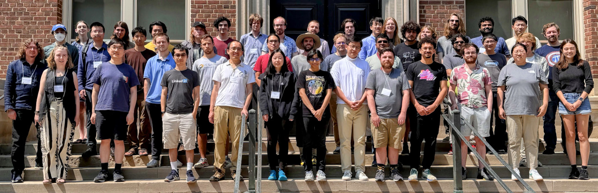
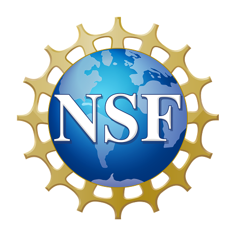
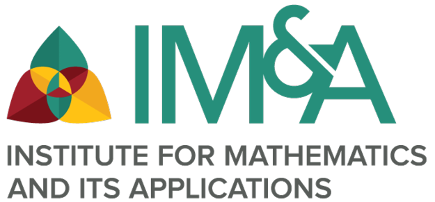
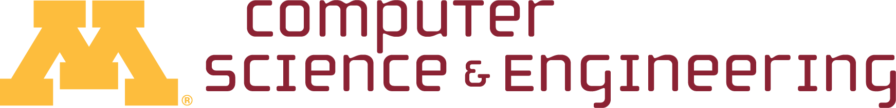

School on Univalent Mathematics
July 29 - August 02, 2024, Minneapolis, USA
(Install party on July 28, 2024)

Overview
Homotopy Type Theory and Univalent Mathematics are emerging fields of mathematics that study a fruitful relationship between homotopy theory and (dependent) type theory. This relation plays a crucial role in Voevodsky's program of Univalent Foundations, a new approach to foundations of mathematics, based on ideas from homotopy theory, such as the Univalence Principle.
The UniMath library is a large repository of computer-checked mathematics, developed from the univalent viewpoint. It is freely available for everyone, as an open-source project, from the web. The School will give many young researchers an opportunity to familiarize themselves with the UniMath library and become contributors.
Format
Participants will receive an introduction to Univalent Foundations and to Mathematics in those foundations, by leading experts in the field. In the accompanying problem sessions, participants will formalize pieces of Univalent Mathematics in the UniMath library.
Learning Materials
The learning materials for the school are located here.
Lecturers
- Benedikt Ahrens (Delft University of Technology)
- Carlo Angiuli (Indiana University)
- Kuen-Bang Hou (Favonia) (University of Minnesota)
- Paige Randall North (Utrecht University)
- Niels van der Weide (Radboud University Nijmegen)
Prerequisites
Participants should be interested in mathematics and the use of computers for mathematical reasoning. Participants do not need to have prior knowledge of logic, Coq, or Univalent Foundations.
Location
Lind Hall, University of Minnesota (Twin Cities campus), Minneapolis, MN, United States
Social
We use the UniMath Zulip server for communication between all participants. Feel free to ask any questions related to univalent mathematics and the installation of UniMath there. For any communication directly related to the School on Univalent Mathematics, please use the dedicated channel Minnesota 2024. You can use this channel to meet other participants even before the school, to organize travel together and plan activities.
Schedule
Before the event
- Check recommended reading
- Install UniMath on your laptop
Recommended reading
You can prepare for the school by studying some of the material listed below.
Installing UniMath
Please install UniMath on your laptop before coming to Minneapolis. To this end, read the installation instructions. In case of problems or questions, please ask on the UniMath Zulip server. You can also attend the UniMath install party on Sunday afternoon for help with the installation - see Section "Schedule" for more information.
Sponsors
We thank the National Science Foundation, the University of Minnesota's Department of Computer Science & Engineering, and the University of Minnesota's Institute for Mathematics and its Applications for their generous support of this event.
 

Organisers
- Benedikt Ahrens
- Kuen-Bang Hou (Favonia)